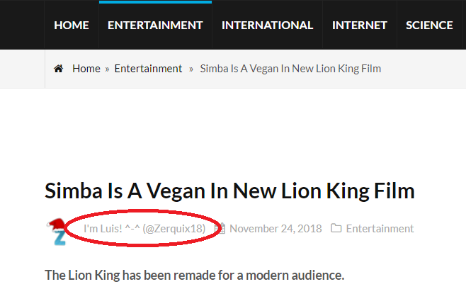
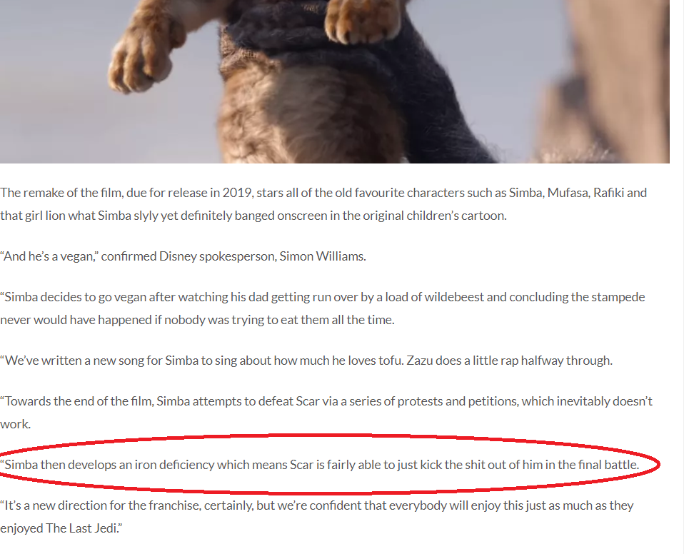
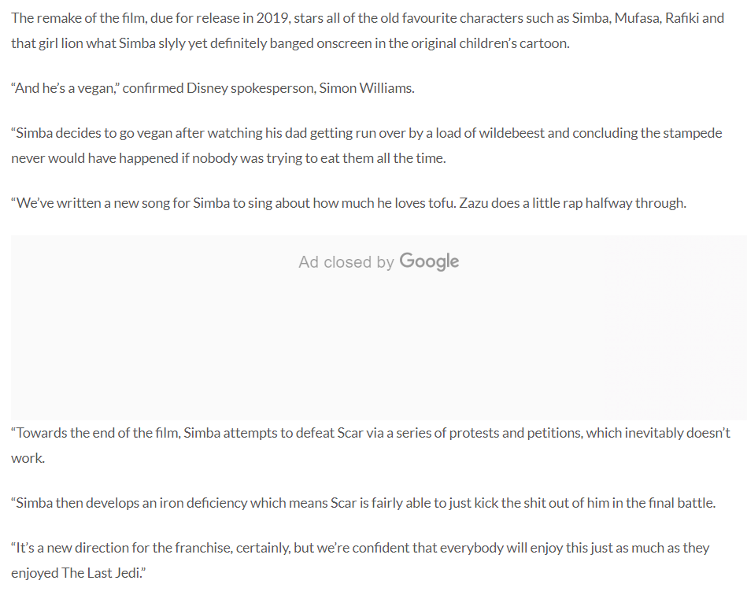

The company that created this article is called 8Satire. The name itself is clear evidence that this is fake news because it has the word satire in it.
2)Author:
The author name is solid evidence that it is fake news because there is no real information about him and the articles that the author made are inappropriate and not very common in big news channels. Click here to see some of his/her articles.


3)Joke:
The circled area is telling the reader a joke. This is convincing proof that this is fake news because big news companies do not include jokes in their stories or articles.
4)Full Text:
After reading the article, it is clear that it is fake news. After doing a quick search, there is no Disney Spokesperson who has the name of Simon Williams. Also, the 2nd half of the article has nothing to with the actual topic of the article.

If you are still not sure if a news article is fake, you can always check some websites to confirm your thinking. Some of these websites are: